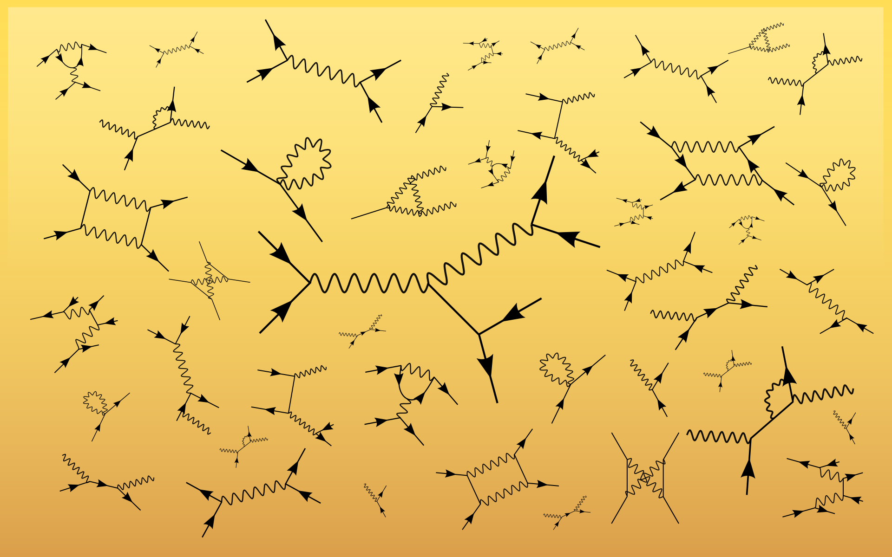

Home

Our research in theoretical high energy physics focus on quantum field theory and its application, in particular Quantum Chromodynamics (QCD) and the electroweak theory at high energy colliders, with main research focuses on:
- Quantum field theory and effective field theory
- Infrared structure of non-abelian gauge theories and QCD factorization theorem
- All-order resummation and parton shower
- Collider phenomenology: jet, heavy flavor and electroweak physics
- Spin physics and quantum tomography of nucleons.
The research is closely connected to the experiments performed at the Large Hadron Collider (LHC), Relativistic Heavy Ion Collider (RHIC), and the future Electron-Ion Collider (EIC).
If you are interested in working with us as a postdoc, graduate student, or undergrad, please contact us.